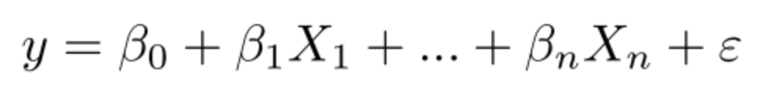

Lab 6 Linear Regression
Overview:
Classifying imagery is an essential part of Remote Sensing research. In the previous lab, we began working with classification and regression, and we will continue on this same path for the first half of this lab. We will begin to explore Random Forest models more in depth, which were briefly introduced in the previous lab.
Ultimately, the purpose of classification in this context is to use known characteristics of a subset of the image to make a best-estimate classification of the rest of the image.
6.1 Regression
In the present context, regression means predicting a numeric variable instead of a class label. No lab on regression would be complete without the requisite introduction to least squares regression.
6.1.1 Ordinary Least Squares (OLS)
Ordinary regression is when G is a linear function of the form G(p) = βp where β is a vector of coefficients. Once G is trained by some training set T, we can estimate the the value for some unknown p by multiplying it with β.
Suppose the goal is to estimate percent tree cover in each Landsat pixel.
Import data to use known values for g. Search ‘vegetation continuous fields’ to import ‘MOD44B.006’ as the variablemod44b and extract the most recent image.
Since water is coded as 200 in this image, replace the 200’s with 0’s and display the result. Documentation for the .where clause is at this link. Scroll in and note that when you click on a water area it will say ‘masked’, where as an area on land will provide a numerical value listed as ‘Percent_Tree_Cover’.
var percentTree = tree.select('Percent_Tree_Cover')
.where(tree.select('Percent_Tree_Cover').eq(200), 0);
var visualization = {
bands: ['Percent_Tree_Cover'],
min: 0.0,
max: 100.0,
palette: ['bbe029', '0a9501', '074b03']
};
Map.addLayer(percentTree, visualization, 'percent tree cover'); Each pixel will represents percent tree cover (as an integer value) at 250 meter resolution in 2010.
Import data to use as predictor variables (p). Search ‘landsat 5 raw’ and import ‘USGS Landsat 5 TM Collection 1 Tier 1 Raw Scenes’. Name the import landsat5_raw. Filter by time and the WRS-2 path and row to get only scenes over the San Francisco bay area in 2010.
var landsat5_filtered = landsat5_raw.filterDate('2010-01-01', '2010-12-31')
.filterMetadata('WRS_PATH', 'equals', 44)
.filterMetadata('WRS_ROW', 'equals', 34);Use an Earth Engine algorithm to get a cloud-free composite of Landsat imagery in 2010. Note that this will provide landsat imagery over the area of San Francisco - if you use the inspector to click anywhere else, the values are ‘masked’.
var landsat = ee.Algorithms.Landsat.simpleComposite({
collection: l5filtered,
asFloat: true
});
Map.setCenter(-121.9, 37.7, 10)
Map.addLayer(landsat, {bands: ['B4', 'B3', 'B2'], max: 0.3}, 'composite');Specify the bands of the Landsat composite to be used as predictors (i.e. the elements of p):
Now that all the input data is ready, we can build the shell of our linear regression equation. It’s customary to include a constant term in linear regression to make it the best linear unbiased estimator. Stack a constant, the predictor variables and the ‘Percent Tree Cover’ Image as the variable trainingImage, representing known g:
If you print trainingImage to the console, you will see that the format of the data that we have follows the typical equation for linear regression. 

Sample 1000 pixels out of trainingImage, to get a table of Feature Collections, each containing a value for each band (1-7), a value for the ‘Percent Tree Cover’, and a constant (value of 1).
var training = trainingImage.sample({
region: landsat5_filtered.first().geometry(),
scale: 30,
numPixels: 1000
});Inspect the first element of training to make sure it has all of the expected data.
The next step is to train G. Make a list of the variable names, predictors followed by g:
In Earth Engine, linear regression is implemented as a Reducer. This means that training G is a reduction of the T table, performed using the list of variables as an input. The argument (8) tells the reducer how many of the input variables are predictors - note that we have 1 as a constant.
var regression = training.reduceColumns({
reducer: ee.Reducer.linearRegression(8),
selectors: trainingList
});Print regression - we now have a coefficient for each of the predictor variables (in the order specified by the inputs list), along with a value for residuals (the difference between the observed and predicted values).

To use the coefficients to make a prediction in every pixel, first turn the output coefficients into an image, then perform the multiplication and addition that implements βp:
var coefficients = ee.Array(regression.get('coefficients'))
.project([0])
.toList();
var predictedTreeCover = ee.Image(1)
.addBands(landsat.select(predictionBands))
.multiply(ee.Image.constant(coefficients))
.reduce(ee.Reducer.sum())
.rename('predictedTreeCover');
Map.addLayer(predictedTreeCover,
{min: 0, max: 100,
palette:['bbe029', '0a9501', '074b03']},
'prediction');Carefully inspect this result by using inspector on the prediction layer and comparing it to the satellite imagery basemap. Is it satisfactory? If not, it might be worth testing some other regression functions, adding more predictor variables, collecting more training data, or all of the above. In remote sensing research, this is not a one-step process - to find value in these models, you will need to continuously improve, iterate and retest your assumptions.